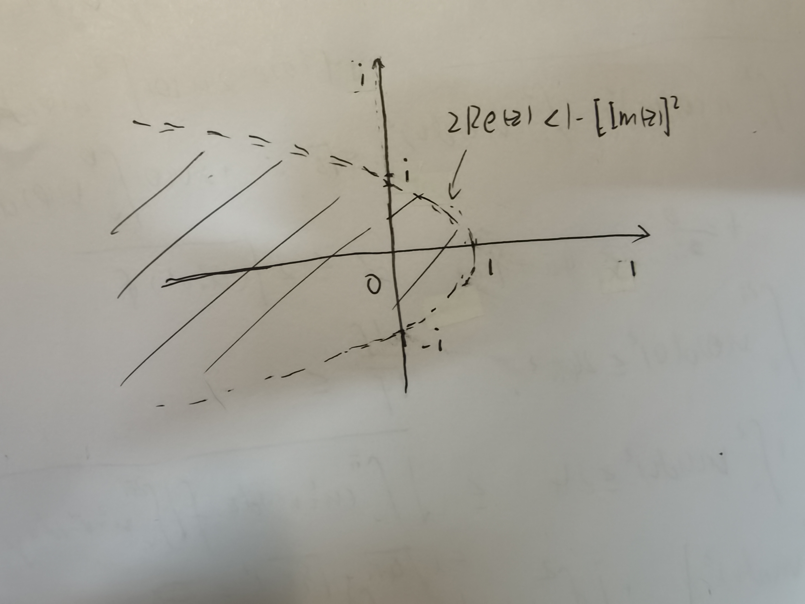

复变期中小测
第三部分 · 第 2 份 · 2022.12.30 · 4 页 · Midterm Quiz
- 1.
该函数奇点满足cosz=2eiz+e−iz=−2,整理得
从中解得eiz=−2±3<0，因此其全部奇点为
zk1=−iLn(−2−3)=−i[ln(2+3)+iπ+2k1πi] =(2k1+1)π−iln(2+3)(k1∈Z), zk2=−iLn(−2+3)=−i[ln(2−3)+iπ+2k2πi] =(2k2+1)π−iln(2−3)(k2∈Z). - 2.
- (1)
经计算，
i3=exp(3Ln i)=exp[3(0+iArg i)]=exp[23(4k+1)πi](k∈Z). - (2)
对∀x∈R，由于
sin(ix)=2ie−x−ex=isinhx,cos(ix)=2e−x+ex=coshx,
因此
sin(1+2i)=sin1cos(2i)+cos1sin(2i)=sin1cosh2+icos1sinh2.
- 3.
记f(z)=z(z−2i)(2z+2)21.
在闭路C所包围的区域内，f(z)具有1级极点z0=0,z2=2i与2级极点z1=−1，由留数定理，
I=∮Cf(z)dz=2πik=0∑2Res[f(z),zk]
=2πi{(−2i)⋅221+z→z1limdzd[(z+1)2⋅z(z−2i)(2z+2)21]+2i⋅(2+4i)21}
=2πi⋅[−8i1+8i1(1−(1+2i)21)+8i(1+2i)21]=0.
- 4.
记f(z)=zzˉ=x2+y2，其中x=Re(z)∈R,y=Im(z)∈R，可见f(z)在复平面上不解析，不能使用柯西积分定理.
当z在圆∣z∣=1上时，f(z)=∣z∣2=1，记z=eiθ，则由定义，
∮Cf(z)dz=∫−iif(z)∣x=Re(z)≡0dz+∫∣z∣=1,π/2<θ<3π/2f(z)dz
=i∫−11y2dy+∫π/23π/2ieiθdθ=32i−2i=−34i.
- 5.
记g(x,y)=x2−y2+xy+3y，因此
∂x2∂2g=∂x∂(2x+y)=2,∂y2∂2g=∂y∂(x−2y+3)=−2,
可得Δg=∂x2∂2g+∂y2∂2g=0.
该式对∀(x,y)∈R2都成立，因此g(x,y)为全平面的调和函数.
设f(z)=u(x,y)+iv(x,y)，其中z=x+iy (x,y∈R)，那么
f′(z)=∂x∂u+i∂x∂v=∂y∂v−i∂y∂v.
由题意，
x2−y2+3y=∂x∂u−∂x∂v=∂y∂v+∂y∂u,
那么利用Δv=0可得
2∂x∂y∂2u=(−2y+3)+2x,(∂x2∂2−∂y2∂2)u=2x−(−2y+3),(∂x2∂2+∂y2∂2)u=0,
即有
∂x2∂2u=x+y−23,∂x∂y∂2u=x−y+23,∂y2∂2u=−x−y+23,
由题意，
f′(0)=∂x∂u(0,0)−i∂y∂u(0,0)=0,f(0)=u(0,0)+iv(0,0)=i, 即有
u(0,0)=0,v(0,0)=1;∂x∂u(0,0)=∂y∂u(0,0)=0, 因此
∂x∂u=∂x∂u(0,0)+∫0x∂x2∂2uy=0dx+∫0y∂x∂y∂2uxdy=21(x2+2xy−y2)−23(x−y), ∂y∂u=∂y∂u(0,0)+∫0x∂x∂y∂2uy=0dx+∫0y∂y2∂2uxdy=21(x2−2xy−y2)+23(x+y), 将其代入原方程组，并重复一次操作，可得
∂x∂v=∂x∂u−(x2−y2+3y)=−21(x2−2xy−y2)−23(x+y),
∂y∂v=(x2−y2+3y)−∂y∂u=21(x2+2xy−y2)−23(x−y),
u(x,y)=u(0,0)+∫0x∂x∂uy=0dx+∫0y∂y∂uxdy =61(x3+3x2y−3xy2−y3)−43(x2−2xy−y2),
v(x,y)=v(0,0)+∫0x∂x∂vy=0dx+∫0y∂y∂vxdy =−61(x3−3x2y−3xy2+y3)−43(x2+2xy−y2)+1.
综上分析，f(z)表达式为
f(z)=61(1−i)z3−43(1+i)z2+i.
简单解法 设f′(z)=u(x,y)+iv(x,y)，由题意，u−v=x2−y2+3y，因此
∂x∂u−∂x∂v=2x,∂y∂u−∂y∂v=−2y+3,
由 C-R 方程，∂x∂u=∂y∂v, ∂y∂u=−∂x∂v，代入消去v可得
∂x∂u+∂y∂u=2x,∂y∂u−∂x∂u=−2y+3,
因此
∂x∂u=x+y−23,∂y∂u=x−y+23,
选取折线路径：(0,0)→(x,0)→(x,y)，可得
u(x,y)=u(0,0)+∫0x(u−23)du+∫0y(x−v+23)dv
=21x2−23x+xy−21y2+23y+C1,
v(x,y)=u(x,y)−(x2−y2+3y)=−21x2−23x+xy+21y2−23y+C1,
由于f′(0)=0，故C1=0，则
f′(z)=u(x,y)+iv(x,y)=21(1−i)x2+(1+i)xy−21(1−i)y2−23(1+i)x+23(1−i)y
=21(1−i)(x+iy)2−23(1+i)(x+iy)=21(1−i)z2−23(1+i)z,
代入f(0)=i，积分得最终结果
f(z)=61(1−i)z3−43(1+i)z2+i.
- 6.
记z=x+iy (x,y∈R)，那么∣z∣<1−Re z可表示为x2+y2<1−x，即区域D:2x<1−y2.
曲线C:2x=1−y2在R2平面内为一以x轴（在复平面内为实轴）为对称轴、焦准距p=1、焦点位于原点的抛物线，因此D在复平面内表示位于C外包含焦点的区域（不包含曲线C）.
